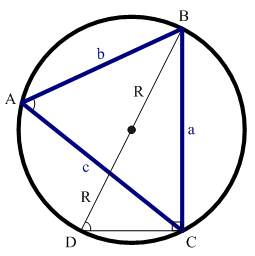
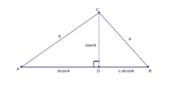
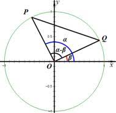

常用的三角比公式
正弦定理
\(\frac{a}{\sin A}=
\frac{b}{\sin B}=
\frac{c}{\sin C}=2R
\)
三角比關係
商數關係：
\(\tan\theta=\frac{\sin\theta}{\cos\theta}\)
平方關係：
\(\sin^2\theta+\cos^2\theta=1\\\)
正弦定理證明：

\(\because\overset{\frown} {BC}\)對應到的兩個\(A D\)角的角度相同
\(\therefore\sin A=\sin D\\
\because\sin D=\frac{a}{2R}\\
\therefore\sin A=\sin D=\frac{a}{2R}\\\)
換算得\(2R=\frac{a}{\sin A}\)
餘弦定理
\(a^2=b^2+c^2-2bc \cos A\\
b^2=c^2+a^2-2ca \cos B\\
c^2=a^2+b^2-2ab \cos C\)
餘弦定理證明：

\(a^2=\overline{BC}^2\\
=\overline{CD}^2+\overline{BD}^2\\
=(b\sin A)^2+(c-b\cos A)^2\\
=b^2+c^2-2bc \cos A\)
得證：\(a^2=b^2+c^2-2bc \cos A\\\)
餘弦\(\cos\)和角公式：

P點座標為\((\cos \alpha,\sin \alpha)\)
Q點座標為\((\cos \beta, \cos \beta)\)
因為圓O為單位圓，而P、Q在圓的邊長上，所以\(\overline{PO},\overline{QO}\)長度為一
根據餘弦定理，\(\overline{PQ}^2=\overline{PO}^2+\overline{QO}^2 -2\overline{PO} \times \overline{QO} \times \cos (\alpha - \beta)\\\)
\(\overline{PQ}^2= 1^2+1^2-2\times 1 \times 1 \times \cos(\alpha-\beta)\\\)
=2 - 2 \(\cos(\alpha-\beta)\)
而根據畢氏定理
\(\overline{PQ}^2=\overline{PO}^2+\overline{QO}^2\)
=\((\cos \alpha - \cos \beta)^2+(\sin \alpha - \sin \beta)^2\)
=\((\cos^2 \alpha+\cos^2\beta -2\cos\alpha\times\cos\beta)\)
\(+(\sin ^2\alpha+\sin ^2\beta-2\sin\alpha\times\sin\beta)\)
=2-2\((\cos\alpha\times\cos\beta+\sin\alpha\times\sin\beta)\)
將兩個算式合併之後：
\(\overline{PQ}^2=2 - 2 \cos(\alpha-\beta)\)
=2-2\((\cos\alpha\times\cos\beta+\sin\alpha\times\sin\beta)\)
化減之後
\(\cos (\alpha-\beta)=\cos\alpha\times\cos\beta+\sin\alpha\times\sin\beta\\\)
餘弦\(\cos\)差角公式：
\(\cos(\alpha+\beta)=\cos(\alpha-(-\beta))\\\)
\(=\cos \alpha \times \cos (-\beta)+\sin \alpha \times \sin (-\beta)\\\)
\(=\cos \alpha \times \cos \beta - \sin \alpha \times \sin \beta\\\)
所以 \(\cos (\alpha +\beta) = \cos \alpha \times \cos \beta - \sin \alpha \times \sin \beta \\\)
正弦\(\sin\)和角公式：
\(\sin (\alpha + \beta) = \cos (90^{\circ} - (\alpha + \beta))\\\)
\(=\cos((90^{\circ}-\alpha)-\beta)\\\)
\(=\cos(90^{\circ}-\alpha)\times \cos\beta -\sin (90^{\circ}-\alpha)\times \sin -\beta\\\)
\(=\sin\alpha\times\cos\beta +\cos\alpha\times\sin\beta\\\)
餘弦\(\sin\)差角公式：
\(\sin(\alpha - \beta)=\sin (\alpha+(-\beta))\\\)
\(=\sin \alpha \times \cos (-\beta) + \cos \alpha \times \sin (-\beta)\\\)
\(=\sin \alpha \times \cos \beta - \cos \alpha \times \sin \beta\\\)
正切\(\tan\)和角證明：
\(\tan(\alpha+\beta)=\frac{\sin(\alpha+\beta)}{\cos(\alpha+\beta)}\\\)
\[
\begin{align}
= & \frac{\sin \alpha \cos \beta + \cos \alpha \sin \beta}{\cos \alpha \cos \beta - \sin \alpha \sin \beta}\\
= & \frac{\frac{\sin \alpha \cos \beta + \cos \alpha \sin \beta}{\cos \alpha\cos\beta}}
{\frac{\cos \alpha \cos \beta - \sin \alpha \sin \beta}{\cos \alpha\cos\beta}}\\
= & \frac{\frac{\sin \alpha \cos \beta}{\cos \alpha\cos\beta } + \frac{\cos \alpha \sin \beta}{\cos \alpha\cos\beta}}
{\frac{\cos \alpha \cos \beta}{\cos \alpha \cos \beta} - \frac{\sin \alpha \sin \beta}{\cos \alpha \cos \beta}}\\
= & \frac{\frac{\sin\alpha}{\cos\alpha}+\frac{\sin\beta}{\cos\beta}}
{1-\frac{\sin\alpha}{\cos\alpha}\times\frac{\sin\beta}{\cos\beta}}\\
= & \frac{\tan \alpha+\tan \beta}{1-\tan\alpha\tan\beta}
\end{align}\]
正切\(\tan\)差角證明：
\(\tan (\alpha - \beta)=\tan (\alpha+(-\beta))\\\)
\(=\frac{\tan \alpha+\tan -\beta}{1-\tan\alpha\tan-\beta}\\\)
\(=\frac{\tan \alpha-\tan \beta}{1+\tan\alpha\tan\beta}\\\)